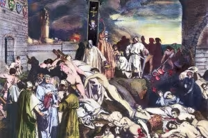

"Tancredi e Gismunda" è una tragica storia d'amore tratta dal "Decamerone" di Giovanni Boccaccio, precisamente dalla decima giornata. La storia parla di Tancredi, principe di Salerno, e Gismunda, figlia del re di Napoli. Tancredi e Gismunda si innamorano profondamente e si sposano in segreto, all'insaputa delle rispettive famiglie. La loro felicità però è di breve durata, poiché Tancredi viene presto chiamato a combattere una guerra. Durante la sua assenza, il padre di Gismunda scopre il loro matrimonio segreto e, in un impeto di rabbia, manda Gismunda in convento. Tancredi ritorna vittorioso dalla guerra, solo per scoprire che la sua amata moglie gli è stata portata via. È devastato e giura di fare tutto il necessario per ricongiungersi con Gismunda. Tancredi riesce a convincere il padre di Gismunda a permettere loro di sposarsi, ma la loro felicità è di breve durata, poiché il padre di Gismunda muore subito dopo le nozze. Tancredi diventa il nuovo re di Salerno, ma il suo regno è minacciato da un gruppo di nobili ribelli che cercano di rovesciarlo. Tancredi riesce a sedare la ribellione ma a caro prezzo. Viene ferito a morte nella battaglia e muore tra le braccia di Gismunda. Gismunda ha il cuore spezzato e, nel dolore, decide di togliersi la vita. Mescola il veleno con le ceneri del marito e lo beve, unendosi a lui nella morte. "Tancredi e Gismunda" è una tragica storia d'amore che esplora i temi dell'amore, della perdita e della fragilità della vita umana. È una testimonianza dell'abilità di Boccaccio come narratore e della sua capacità di catturare la complessità delle emozioni umane. Il decimo giorno del "Decameron" è degno di nota per la sua esplorazione di tragiche storie d'amore, di cui "Tancredi e Gismunda" è uno dei racconti più memorabili e commoventi. La storia ricorda il potere dell'amore e i sacrifici che le persone sono disposte a fare per coloro a cui tengono. Nel complesso, "Tancredi e Gismunda" è una storia inquietante e indimenticabile che rimarrà con i lettori molto tempo dopo aver finito di leggerla. . Lo scopo di "Tancredi e Gismunda" è esplorare i temi dell'amore, della perdita e della fragilità della vita umana. La storia è una tragica storia d'amore che mette in luce i sacrifici che le persone sono disposte a fare per coloro a cui tengono e le conseguenze devastanti che possono derivare da tali sacrifici. La storia funge anche da commento sul clima sociale e politico dell'epoca. , poiché tocca questioni come il potere della nobiltà, il ruolo delle donne nella società e le conseguenze della guerra. Inoltre, "Tancredi e Gismunda" è una testimonianza dell'abilità di Boccaccio come narratore e della sua capacità di catturare le complessità delle emozioni umane. La storia è un'esplorazione potente e commovente dell'esperienza umana e serve a ricordare l'importanza dell'amore e la fragilità della vita.
 <-- Home